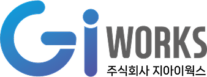

CREDITS
기여자
Credits
부산소프트웨어마이스터고등학교와 부산수학문화관의 산학협력, 그리고 지아이웍스 전문가의 피드백을 통해 제작된 프로젝트입니다.
Binary Media Art was made through a partnership between Busan Software Meister High School and the Busan Mathematics Culture Museum, with feedback from experts at GIWORKS.
만든 사람들
Made by
부산소프트웨어마이스터고등학교 학생 팀 BSSM Ascending
BSSM Ascending, a student team at Busan Software Meister High School


함께한 분들
With help from
-

감수Review
김태균 프로님Taegyun Kim
지아이웍스GIWORKS
-
프로젝트 운영Project coordination
변혜영 담당자님Hyeyoung Byun
부산수학문화관Busan Mathematics Culture Museum
-
지도 교사Supervising teacher
이세준 선생님Sejun Lee
부산소프트웨어마이스터고등학교Busan Software Meister High School
그 외 여러 수학 교육 전문가분들의 피드백을 통해 발전한 프로젝트입니다.
The project also grew through feedback from many mathematics education experts.